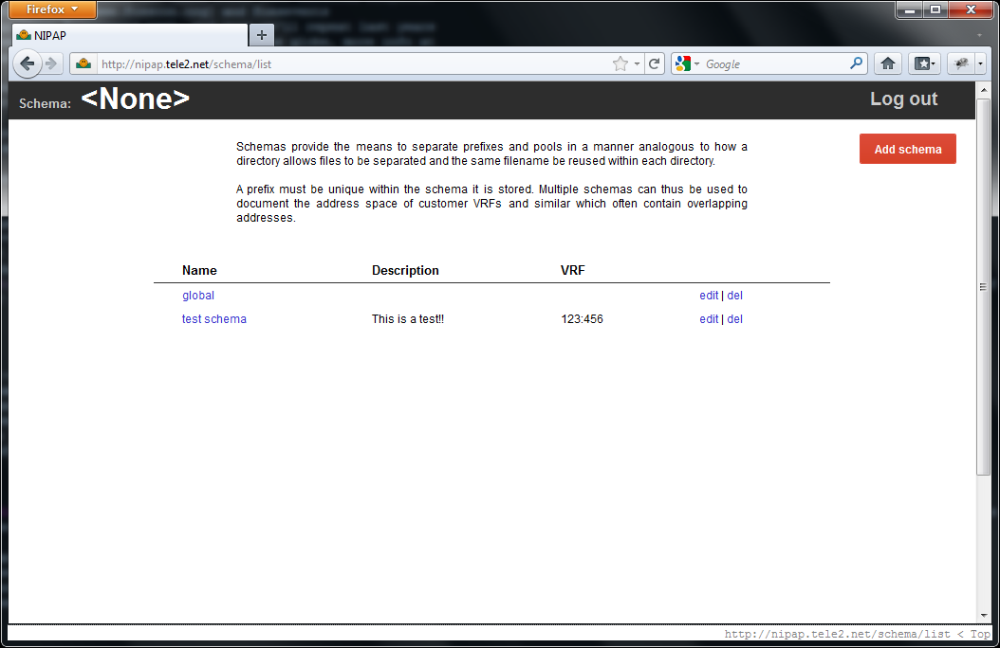
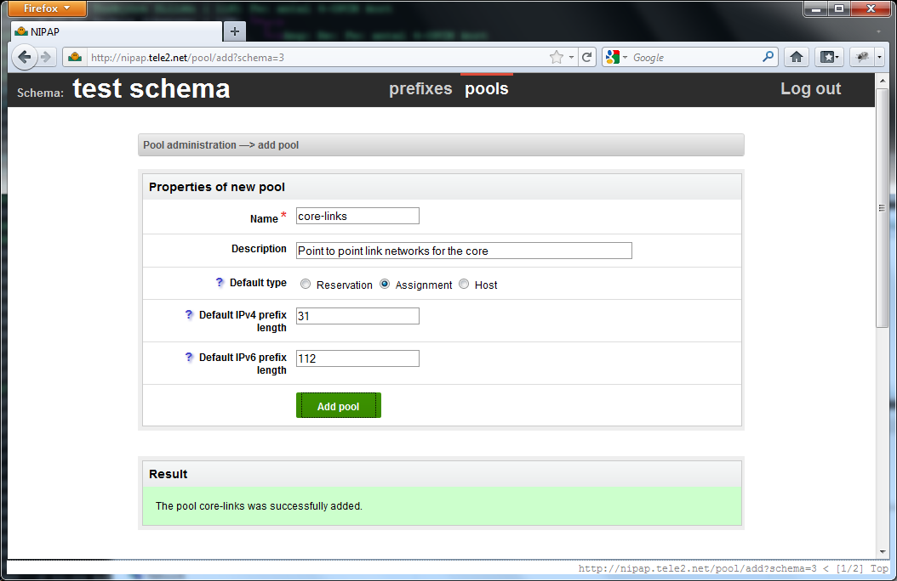
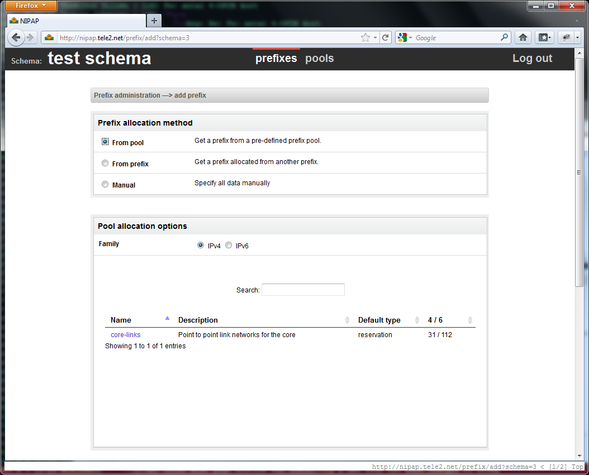

{kind=link}
{kind=link}
{kind=link}

A listing of schemas
Schemas are roughly equal to a VRF in a router. Prefixes are unique inside each schema, so schemas typically represent a VRF but can also be used just to group addresses for whatever reason.
Creating a new address pool.
Address pools (or prefix pools rather) can be used to group a number of prefixes together from which you can later assign new prefixes. The size of the new prefix as well as the 'type' (a NIPAP internal attribute) can be inherited from the address pool. Do note how a pool handles both IPv4 and IPv6 seamlessly.
Creating a new prefix from an address pool
For speedy assignment of new addresses, the user can request one from a pre-defined pool. This allows the end-user to be oblivious of which prefix he should pick his new assignment from, instead he can choose a pool and just get a prefix automatically assigned. An IP registry adminitrator can make sure that the pools don't run out of addresses.
Prefix search
A typical search. Matching prefixes are in black, grey prefixes are included for context. Notice the indentation for further helping the user understand the prefix structure.
Copyright Kristian Larsson, Lukas Garberg 2011-2012.
{% include footer.html %}